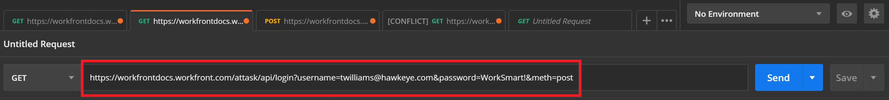
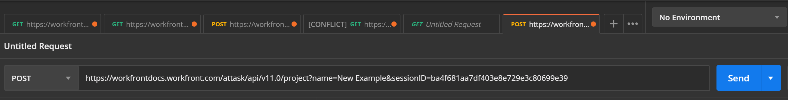
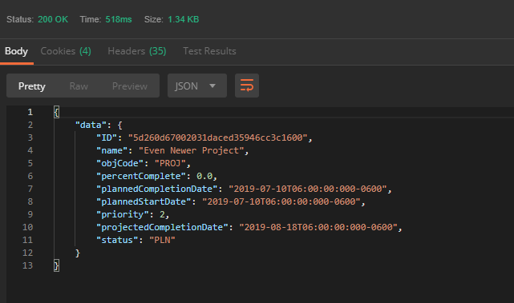
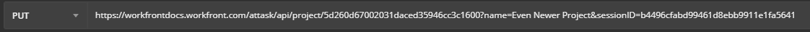
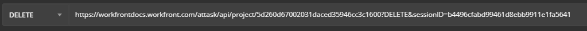
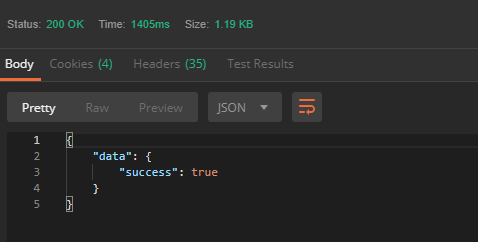

Putting it all together
The underlying structure behind all APIs is the process of making requests and translating responses into information that can be utilized for other purposes. The Workfront API can be utilized for creating additional functionality to interface with your Workfront instance, or for generating custom reports. Whether you're building a program or creating a report, the basis is still the same: call and response.
Download Postman
The following project will be handled primarily with Postman. If you have not done so already, visit GetPostman.com. and download a free copy of their software to get started.
Obtain Authentication
Before you can submit a request to the Workfront API, you'll need to obtain the proper authentication. This example shows you how to establish authentication by logging into your Workfront account and requesting an API Key, through Postman. This API Key can be used to validate all of your requests, regardless of the method used.
Log in to your Workfront account and generate an API Key for yourself by using this URI:
Here is an example of a complete URI and where to enter it in Postman:
If the information that you sent is correct, there are 2 possible responses:
200 Response (OK): The request was processed successfully, an API Key was generated for your account, and it was returned in the response body.
401 Response (Unauthorized): The request was received by the system, but you lack the proper authority to create an API Key.
The 200 Response resembles the following:
{
"data": {
"result": "xxxxxxxxxxxxxxxxxxxxxxxxxxxxxxxx"}
}
In this example, the string of x's represents a random string of 32 characters. This string is the API Key that you generated.
This same API Key can be used in future sessions, as long as it hasn't expired. You can retrieve your current API Key at any time by using the following URI:
You can also manage your API Keys via the Workfront UI, which includes the ability to create new keys. You can find additional information about how to access these features via the Workfront UI in the support article Managing API Keys for the Workfront System.
Make a request
In the Workfront API, a request can complete all of the actions as defined by the RESTful CRUD acronym:
- Create
- Read
- Update
- Delete
The corresponding RESTful HTTP operations to the aforementioned actions are:
- POST: allows you create a new object
- GET: allows you to view an object
- PUT: allows you to update an already existing object with new information
- DELETE: allows you to delete an existing object
Create a new project
To Create a new project in your instance of Workfront, use the following URI and the POST method:
Notice that spaces are permitted in the project name parameter.
Here is an example of what that looks like in Postman:
Analyze the POST response
The response returned from the Workfront API contains information about the project that you just created in your instance of Workfront.
Notice how each field in the response has a descriptive name that tells you something different about the project:
- ID: The ID field specifies the unique Workfront ID assigned to the new project that you just created.
- name: is the name that you assigned to the project.
- objcode: is a code which refers to the type of object that was created.
- percentcomplete: is a percentage of how much of the project has been completed.
- plannedStartDate: refers to the planned start date of the project
- priority: is the level of priority that has been assigned to the project
- plannedCompletionDate: refers to the planned completion date of the project
- status: is what phase the project is in. For example, a new project should always begin in the planning phase, unless otherwise specified. The planning phase is denoted simply by "PLN".
Read information about your new project
Now that an object exists in your portfolio, you can make a GET request to read information about that object. Use the unique Workfront ID that was assigned to your new project to make a GET request in this format:
Analyze the GET response
 >Update the information in your new project
To make changes or updates to your new project, you can use a PUT request. An object may have several different ways for you to update its information. In this case, you can use the PUT method and the UPDATE action to update the parameters that make up your project. The following is a PUT request to change the name of "Example Project" to "Even Newer Project":
Analyze the PUT response
Notice that the project has returned nearly the same data that was returned from the GET request made earlier except that the name field has been updated. Nearly all of the parameters displayed in this response can be updated with a PUT request similar to the one made above.
Delete your new project
If you decide that you no longer want your new project, you can delete it by making a request using the DELETE method.
Analyze the DELETE response
The DELETE response is short and simple. The "success" field returns a boolean value indicating whether or not the deletion was carried out.
